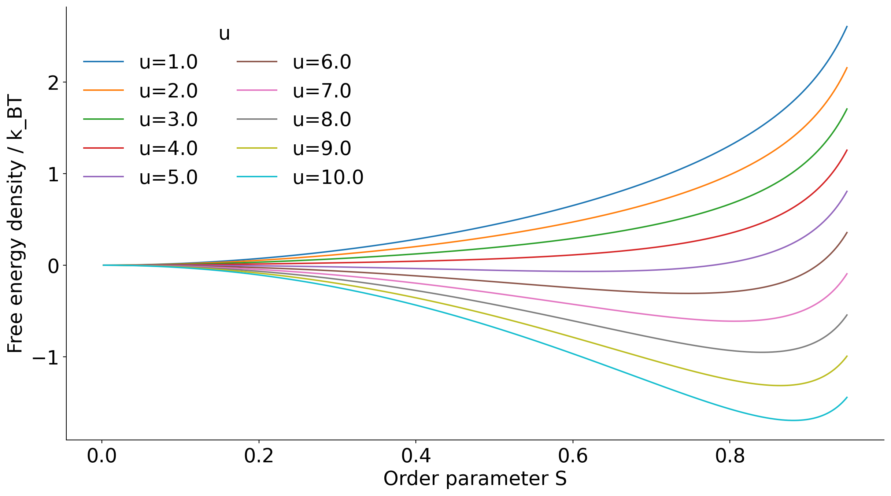
Maier-Saupe Theory, Lebwohl-Lasher Model, Frank Elasticity, Topological Defects
Functional derivative is the extension of ordinary derivative to functionals (functions of functions)
A general formulation (that you may have already seen) starts from an action functional S[\phi]:
S[\phi] = \int \mathcal{L}(\phi(x), \phi'(x), x) dx
\mathcal{L} is the Lagrangian function: e.g. x is space, \phi(x) a field defined over space (e.g. density)
Perturb S[\phi] by an amount \epsilon with an arbitrary function \eta(x) vanishing at the boundaries
Integrate by part the second term to cast it all as an expression proportional to the test function \eta(x):
\delta S=\int\left[\frac{\partial \mathcal{L}}{\partial \phi}-\frac{d}{d x}\left(\frac{\partial \mathcal{L}}{\partial \phi^{\prime}}\right)\right] \eta(x) d x
If we want S[\phi] to be stationary with respect to arbitrary perturbations \eta(x), then \delta S=0 for all \eta(x).
This leads to the Euler-Lagrange equation:
\frac{\partial \mathcal{L}}{\partial \phi}-\frac{d}{d x}\left(\frac{\partial \mathcal{L}}{\partial \phi^{\prime}}\right)=0
which defines the functional derivative as \frac{\delta S}{\delta \phi(x)}=\frac{\partial \mathcal{L}}{\partial \phi}-\frac{d}{d x}\left(\frac{\partial \mathcal{L}}{\partial \phi^{\prime}}\right)
We saw the Landau-de Gennes free energy for nematic liquid crystals. f-f_0=\frac{a}{3}\left(T-T^{\ast}\right) S^2-\frac{2 b}{27} S^3+\frac{c}{9} S^4 .
The Maier-Saupe theory is a simple alternative microscopic mean-field theory that gives us a more physical insight.
The idea is to construct the free energy as we have done in various prior cases by identifying:
As for the Landau-de Gennes theory, we will focus on :
V\left(\Omega_i, \Omega_j\right)=-U_0 P_2\left(\mathbf{u}_i \cdot \mathbf{u}_j\right)
We can average over all possible orientations of molecule j to get the mean-field potential felt by molecule i: U_i^{\mathrm{mf}}(\Omega)=\rho \int V\left(\Omega, \Omega^{\prime}\right) p\left(\Omega^{\prime}\right) d \Omega^{\prime}=-u S P_2(\mathbf{u}_i \cdot \mathbf{n})
where we have defined the scalar order parameter S=\int P_2\left(\mathbf{u} \cdot \mathbf{n}\right) p(\Omega) d \Omega and identified the director \mathbf{n} and the energetic coupling u.
So we can average the mean-field potential over all orientations of molecule i to get the average interaction energy per molecule (and divide by 2 to avoid double counting):
U^{mf} = -\dfrac{u}{2} S^2
In essence, we get a potential that aligns molecules with the director, and that is quadratic to reflect head-tail symmetry.
The second conrirbution is entropic in nature.
Use orientational distribution function p(\Omega) and (as in Landau-de Gennes) and assume uniaxial symmetry around the director \mathbf{n}, i.e. p(\Omega)\sim p(\theta).
The usual Gibbs (or Shannon) entropy functional -k_B \int p(\Omega)\ln p(\Omega) d\Omega contributes to the free energy as
f_{\rm entropy }=k_B T \int_0^\pi p(\theta) \ln (4 \pi p(\theta)) \sin \theta d \theta
where 4\pi and \sin \theta d \theta come from normalization over solid angle. 1
Together we, have the Maier-Saupe free energy functional per molecule
f=f_0-u \frac{S^2}{2}+k_B T \int_0^\pi p(\theta) \ln (4 \pi p(\theta)) \sin \theta d \theta
The only constraint is normalization of p(\theta): \int_0^\pi p(\theta) \sin \theta d \theta=1 where the \sin \theta comes from the solid angle element.
Introduce the Lagrange multiplier \lambda to enforce the constraint and minimize the functional and set the variation to zero: \delta\left[f+\lambda\left(\int_0^\pi p(\theta) \sin \theta d \theta-1\right)\right]=0 The functional derivative yields (check!):
\frac{\delta f}{\delta p(\theta)}+\lambda \sin \theta=0
Remember that - by definition -
S=\left\langle P_2(\cos \theta)\right\rangle=\int_0^\pi P_2(\cos \theta) p(\theta) \sin \theta d \theta
So \dfrac{\delta S^2}{\delta p} =2 S P_2(\cos\theta)\sin\theta
So when calculating the partial derivative we have
\dfrac{\delta f}{\delta p} =-uS P_2(\cos\theta)\sin\theta +k_BT\left(\ln(4 \pi p(\theta)) + 1\right) \sin \theta
and hence, after simplifying \sin \theta, our Lagrange equation reads
-u S P_2(\cos \theta)+k_B T(\ln (4 \pi p(\theta))+1)+\lambda=0
Its solution yields
p(\theta)=\frac{1}{Z} \exp \left(\lambda P_2(\cos \theta)\right)=\frac{1}{Z} \exp \left(\frac{u S}{k_B T} P_2(\cos \theta)\right)
where the partition function Z ensures normalization.
The solution is said to be self-consistent because p(\theta) depends on S, which in turn depends on p(\theta).
The self-consistency condition is
S = \int_0^\pi P_2(\cos \theta) p(\theta) \sin \theta d\theta
where p(\theta) itself depends on S:
p(\theta) = \frac{1}{Z} \exp\left(\frac{u S}{k_B T} P_2(\cos \theta)\right)
This equation must be solved for S at each temperature T.
In general, this requires a numerical solution (see problem classes for a special case where we can make progress analytically).

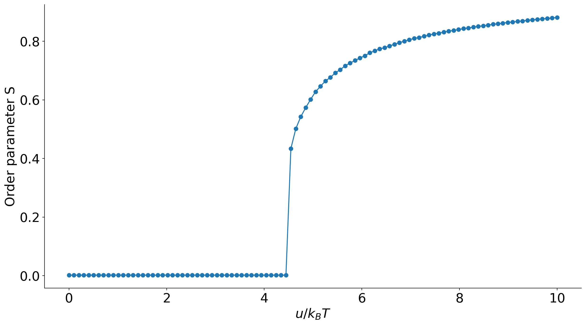
The resulting phase transition is weakly first order with a discontinuous jump in S at the transition temperature. u/k_BT \approx 4.55.
The answer may look puzzling: if we take the Maier-Saupe model literally, u must be nonzero for the transition to occur.
However, we can think of the rod-rod interaction not as a true energetic one, but also representing effective interactions, such as depletion.
Then the answer is yes, and hard-rods undergo an isotropic-nematic transition driven purely by entropy (Onsager theory, beyond this course).In 2D
H=-\epsilon \sum_{\langle i, j\rangle}\left[\frac{3}{2} \cos ^2\left(\theta_i-\theta_j\right)-\frac{1}{2}\right]
🪁 Demonstration in class
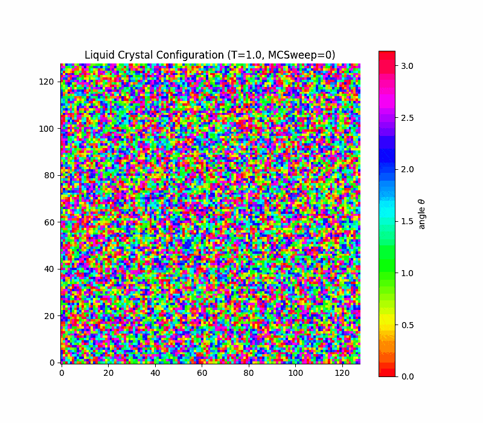
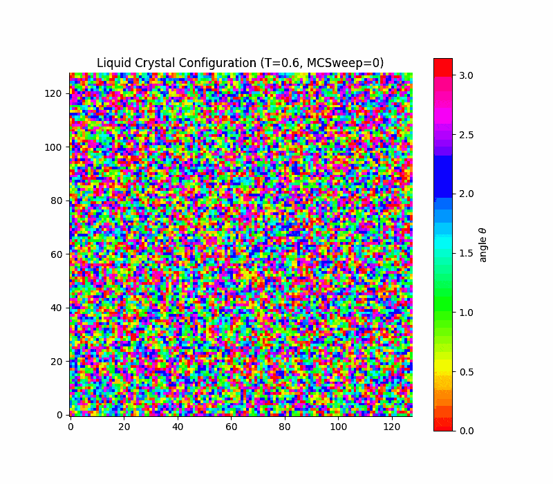
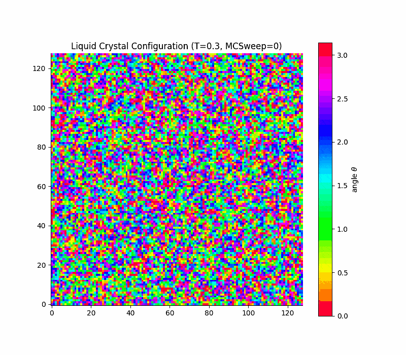
in 2d the transition is rounded, not true first order (Kosterlitz-Thouless only quasi long range order) due to a key theorem due to Mermin and Wagner which states that
(Mermin-Wagner theorem) Continuous symmetries cannot be spontaneously broken at finite temperature in systems with sufficiently short-range interactions in dimensions d \leq 2.
Long-range fluctuations are favoured in d \leq 2.
Here the continuous symmetry is the rotational invariance of the director field in the plane.
Charles Frank (1958, of our Frank lecture theatre) developed a continuum theory to describe the elastic properties of nematic liquid crystals.
The Frank free energy density describes the cost of spatial variations in the director field \mathbf{n}(\mathbf{r}):
f_{\text{Frank}} = \frac{1}{2} K_1 (\nabla \cdot \mathbf{n})^2 + \frac{1}{2} K_2 (\mathbf{n} \cdot \nabla \times \mathbf{n})^2 + \frac{1}{2} K_3 (\mathbf{n} \times \nabla \times \mathbf{n})^2
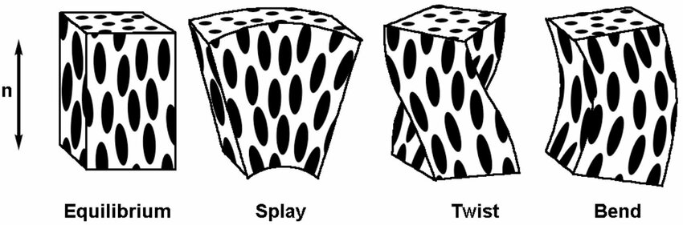
Pure splay, twist and bend compared to equilibrium from Binder et al. J. Phys. Mater. (2020)
With this free energy, one can model large-scale deformations and defects in nematic liquid crystals.
We are working in the continuum with a director field \mathbf{n}(\mathbf{r}) that describes the local average orientation of molecules.
In this framekwork, defects are singularities of the field, called disclinations
Examples in 2D:
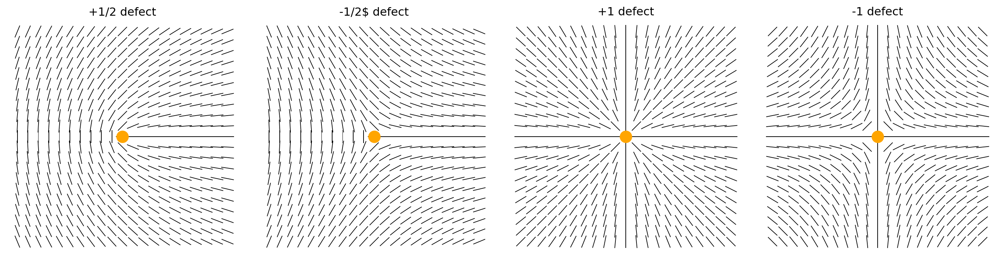
These singularities cannot be removed by any smooth deformation of the field: they are topologically protected.
To make them vanish, one needs oppositely signed defects to bring together so that they annihilate each other.
At finite temperature, defects are spontaneously created/annihilated.
\Delta \theta=2 \pi s
For example, a charge of s=1/2 is a rotation by \pi is performed when going around the defect once.
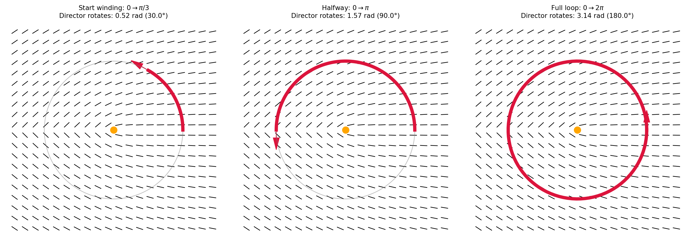
The total topological charge of the defects in a field confined to a compact space is equal to the Euler characteristic of that space
In practice:
On a plane (Euler characteristic = 1), the total topological charge must sum to 1.
On a sphere (Euler characteristic = 2), the total topological charge must sum to 2.
On a torus (Euler characteristic = 0), the total topological charge must sum to 0. \to in periodic systmes the total charge must be zero.
This imposes constraints on the dynamics and interactions of defects.
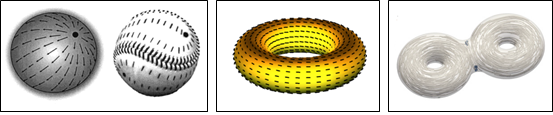
Director fields on a sphere, on a torus and a double torus. The number of hadles (the genus g) determines the Euler characteristic \chi=2-2g. From Nelson (2002)
Analogies well-beyond liquid crystals:
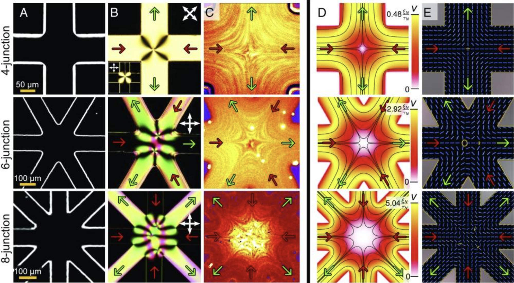
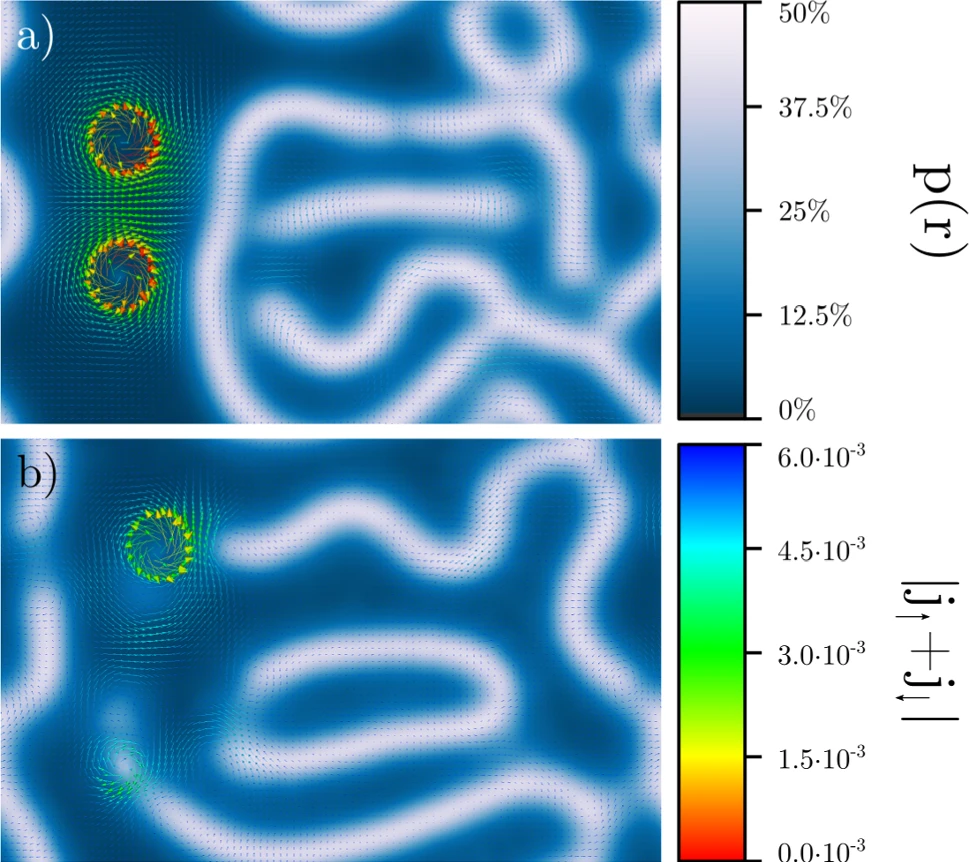
In 3D the disclinations become lines
The director field wraps around the line defect in a similar way as in 2D.
The classification of disclination in 3D involves the rotation group SO(3) (that generalises the construction we have seen in two dimensions) and are more complex in general. They include
Defects control the stability and dynamics of nematic liquid crystals and drive the phase transitions between phases.
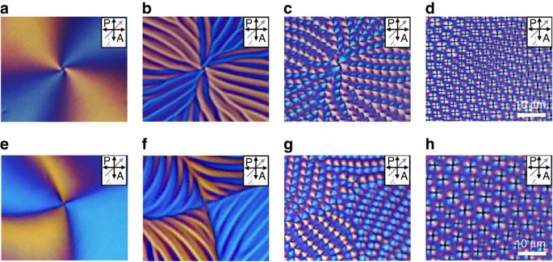
Defect formation and nematic to smectic phase transition via defect branching, Gim et al Nature Communications (2017)
Example from Kim et al Science Advances (2018)
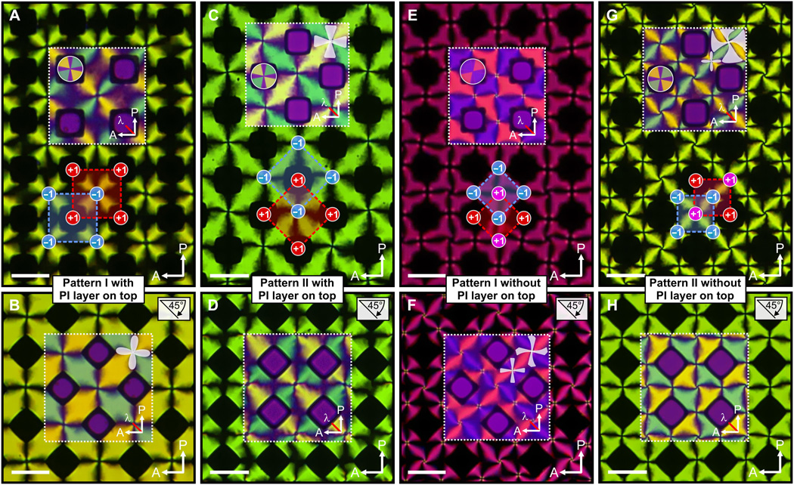
Liquid-crystals defects createfd and controlled by external forces (air pillars through a substrate).